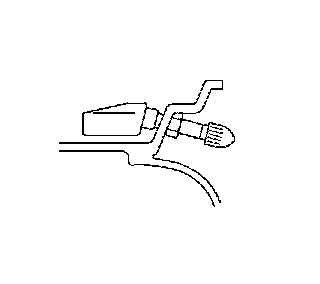
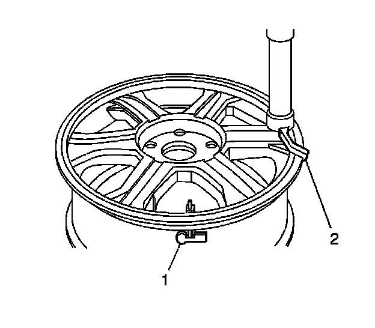
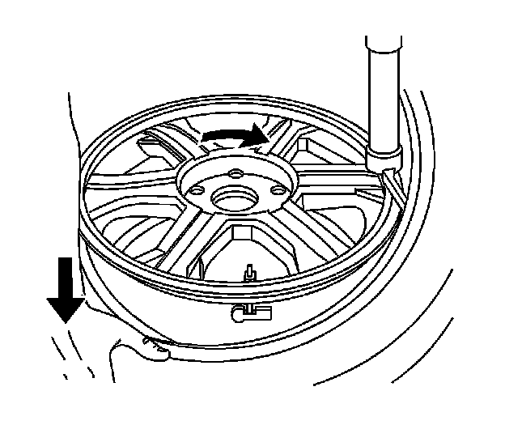
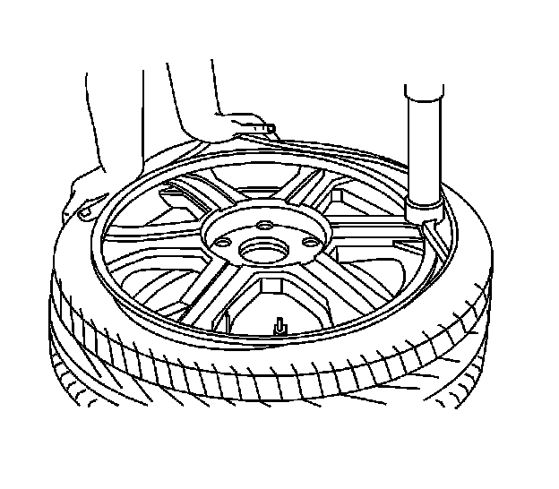
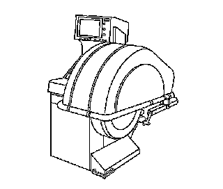
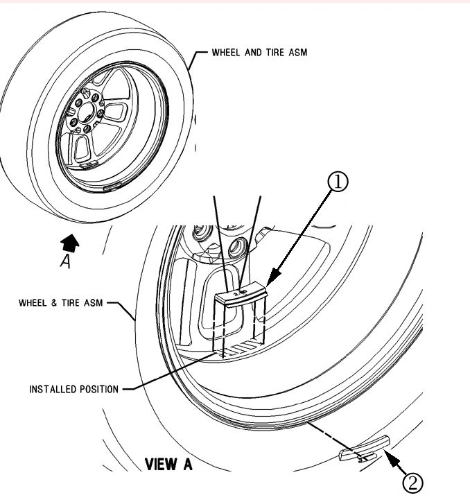
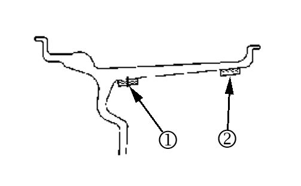

Wheels/Tires - Accessory Wheel And Tire Information
INFORMATIONBulletin No.: 08-03-10-004A
Date: July 24, 2009
Subject: Mounting, Balancing and Installation of Accessory Wheels and Tires Available Through GM Accessories
Models:
2010 and Prior GM Passenger Cars and Light Duty Trucks (Including Saturn, EXCLUDING Astra)
2003-2010 HUMMER H2
2006-2010 HUMMER H3
Supercede:
This bulletin is being revised to add the 2010 model year. Please discard Corporate Bulletin Number 08-03-10-004 (Section 03 - Suspension).
This bulletin is intended to offer comprehensive instructions to GM Dealers and authorized GM Accessory Distributor/Installers as to the proper methods for mounting, balancing, and installing accessory wheels and tires. Adherence to these methods will ensure that the vehicle delivered to the customer is of the highest quality.
Tire Pressure Monitor (TPM) Sensor Installation
1. Clean any dirt or debris from the grommet sealing area.

2. Insert the sensor in the wheel hole with the air passage facing away from the wheel
3. Install the sensor nut and position the sensor body parallel to the inside wheel surface while tightening the nut.
Tighten
Tighten the sensor nut to 7 Nm (62 lb in).
Tire Mounting
Important
When mounting the tires, use the approved tire mounting lubricant. DO NOT use silicon or corrosive base compounds to lubricate the tire bead and the wheel rim. A silicon base compound can allow the tire to slip on the rim resulting in imbalance or braking failure. A corrosive type compound can cause tire or rim deterioration.
1. Verify that the tire is at least 15°C (60°F) prior to mounting and inflating.
2. Apply GM Vehicle Care Rubber Lubricant, P/N 12345884 (Canadian P/N 5728223), to both of the tire beads and both of the wheel bead hump areas for full circumference.
Important
Mounting operation and wheel assembly must be completed within 15 minutes of applying lubricant to ensure proper assembly and inflation. Excess lubricant (drips and runs) in the tire must be avoided as it affects balance and may cause tire slippage on wheels during vehicle operation.

3. Position the rim so the TPM valve stem (1) is situated at the 3 o'clock position relative to the head (2). This will protect the TPM sensor body by ensuring that the bead is under the least amount of tension when it passes over it.
Important
Some GM Accessory wheels have a "reverse-rim" design and will be marked as such. "Reverse-rim" wheels should be positioned face-down for tire mounting, taking care not to damage the face of the wheel.

4. Using the tire changer, rotate the tire/wheel assembly clockwise when transferring the tire bead to the inside of the wheel rim.
5. After the bottom bead is on the wheel, reposition the wheel and tire so that the TPM valve stem is again situated at the 3 o'clock position relative to the head. This will protect the sensor while mounting the tire bead to the outside of the wheel.

6. Using the tire changer, rotate the tire/wheel assembly clockwise when transferring the tire bead to the inside of the wheel rim.
Danger
To avoid serious personal injury, do not stand over the tire when inflating. The bead may break when the bead snaps over the safety hump. Do not exceed 40 psi (275 kPa) pressure when inflating any tire if beads are not seated. If 40 psi (275 kPa) pressure will not seat the beads, deflate, relubricate the beads and reinflate. If greater than 40 psi (275 kPa) is required to install the tire on the wheel, a safety cage must be used. Overinflation may cause the bead to break and cause serious personal injury.
7. Inflate the tire until it passes the bead humps. Be sure that the valve core is not installed at this time.
8. Install the valve core to the TPM's valve stem.
9. Set the inflation pressure to 40 psi (275 kPa). It will be readjusted to the proper placard pressure when it is installed on the vehicle. This higher pressure allows for losses due to temperature change or any leakage that may occur prior to installation on the vehicle.
Important
Aggressive accelerating and braking should be avoided for the first 24 hours after the tires have been mounted to avoid the tire slipping on the rim.
Calibration of Tire/Wheel Balancer
Tire/wheel balancing equipment should be checked for proper calibration every two weeks. Check the calibration of the tire and wheel assembly balancer according to the manufacturer's recommendations or perform the following test:

Important
If the balancer fails any of the steps in this calibration test, the balancer should be calibrated according to the manufacturer's instructions. If the balancer cannot be calibrated, contact the manufacturer for assistance.
1. Spin the balancer without a wheel or any of the adapters on the shaft.
2. Inspect the balancer readings.
Specification
Zero within 0.25 oz (7 g).
3. If the balancer is within the specification range, balance a tire and wheel assembly - that is within radial and lateral runout tolerances - to ZERO, using the same balancer.
4. After the tire and wheel assembly has been balanced, add a 3 oz (85 g) test weight to the wheel at any location.
5. Spin the tire and wheel assembly again. Note the readings.
- In the static and dynamic modes, the balancer should call for 3 oz (85 g) of weight, 180 degrees opposite the test weight.
- In the dynamic mode, the weight should be called for on the flange of the wheel opposite the test weight.
6. With the assembly imbalanced to 3 oz (85 g), cycle the balancer five times.
7. Inspect the balancer readings:
Specification
Maximum variation: 0.25 oz (7 g).
8. Index the tire and wheel assembly on the balancer shaft 90 degrees from the previous location.
9. Cycle the balancer with the assembly at the new location.
10. Inspect the balancer readings:
Specification
Maximum variation: 0.25 oz (7 g).
11. Repeat Steps 8 through 10 until the tire and wheel assembly has been cycled and checked at each of the 4 locations on the balancer shaft.
Tire and Wheel Balancing
1. Follow the balancer manufacturer's instructions to mount the wheel and tire assembly on the balancer.
2. Perform a dynamic balance on the tire and wheel per the manufacturer's instructions (dynamic balance is sometimes referred to as "couple" balance). This will indicate the correct amount of balance weight to add at two positions on the wheel.

Adhesive Weight
Clip-On Weight
3. Install a clip-on balance weight on the inboard wheel flange per the weight indications on the balancer.
- Use only MC-series polyester-coated weights at this location. GM Accessory wheels have an MC-rim contour at the inboard location.
- Use only a nylon or plastic tipped hammer to avoid damaging the weight coating or the wheel finish.
- Never strike a wheel weight more than twice. If it doesn't seat properly after two hits, discard it and try a new weight.
Wheel Rim Profile with Adhesive Weight Locations Shown

Important
Some older GM Accessory wheels may be MC style rims both inboard and outboard and should, therefore, use clip-on MC weights in both positions. Some GM Accessory wheels may be flangeless on the inboard side. In this case, follow the instructions for applying adhesive balanced weights. Place the adhesive weight on the face of the rim inner surface, as far inboard as possible (2).
4. Install adhesive balance weights at the outboard location (1) on the wheel per the weight indications on the balancer.
- Both the wheel and the weights must be at least 15°C (60°F).
- The area where the weights will be applied must be clean and dry. Wipe the area with a 50/50 mixture, by volume, of isopropyl alcohol and clean water using a clean cloth. Allow to dry completely.
- Install adhesive weights just inboard of the wheel face on the rim inner surface.
- Apply a force of 21 lb (90 N) to the weights to achieve proper adhesion. This is very important to achieve proper adhesion.
Balance Weight Limits
When dynamically balancing a wheel and tire assembly, the maximum amount of balance weight that should be used at any one location on a wheel is 5 oz (141 g). This means a maximum of 5 oz (141 g) on the outboard flange (or behind the wheel face, if adhesive weight is used), and maximum of 5 oz (141 g) on the inboard flange (or on the inner rim surface).
If the balancer calls for greater than 5 oz (141 g) n either position, perform the following steps to reduce the weight:
1. Mark the valve stem location on the tire.
2. Deflate the tire/wheel assembly.
3. Remove any existing balance weights.
4. Rotate tire 180 degrees on the wheel.
5. Re-inflate tire/wheel assembly and rebalance.
6. If the tire/wheel assembly still requires more than 5 oz (141 g) per plane, repeat Steps 1-4, rotating the tire 90 degrees from its original position.
7. If the tire/wheel assembly still requires more than 5 oz (141 g) per plane, repeat Steps 1-4, rotating the tire 270 degrees from its original position.
8. If tire/wheel assembly still requires more than 5 oz (141 g) per plane, remove the tire from the wheel, remove all wheel weights and TPM sensor, and check static balance of the wheel.
Important
This is a static balance check only. The operating mode of the balancer must be changed from "dynamic or couple" to "static". The balancer should feed back only a single weight value when in static mode.
- If static balance of wheel is 4 oz (113 g) or less, re-use wheel and reject the tire for excessive imbalance.
- If static balance of the wheel is greater than 4 oz (113 g), re-use the tire and reject the wheel for excessive imbalance.
Tire Pressure Monitor Sensor Learn
When installing GM Accessory wheels and tires on a vehicle that have new TPM sensors installed in them, it is necessary to learn the new sensor identification codes/locations into the vehicle's module. If the relearn procedure is not performed properly, the module will continue to try to communicate with the original sensors that were removed from the vehicle. This will result in the vehicle displaying a TPM system malfunction message once the vehicle is removed from the proximity of the original sensors for an extended period of time. Please see the Tire Pressure Sensor Learn procedure in SI for the vehicle specific instructions.
Tire Inflation Pressure and Placards
Tire Placard
When installing GM Accessory wheels and tires on a vehicle, the new tire pressure placard (supplied with the GM Accessory wheel kit) must be installed over the existing placard inside the driver's side door frame. This is required when the size of the GM Accessory tires is different than those being removed from the vehicle.
The new tire placard should be located within the red box, over the top of the original tire label found on the door jamb. To locate the placard within the red box use the upper left hand edge of the red line as a guide. When properly placed, the new tire placard will obscure the original tire information. Be sure that the surface is clean and dry, and the surface temperature is not less than 21°C (65°F).
Tire Inflation Pressure
Note the front, rear, and spare (where applicable) tire inflation pressures shown on the new tire placard. The inflation pressure of new tires on the vehicle must be adjusted to the values shown on the placard. Even if the tire size was not changed on the vehicle and the tire pressure placard was not replaced, all of the tires must have their inflation pressures adjusted to match those shown on tire pressure placard.
Electronic Module Reprogramming for Proper Tire Inflation Pressure
When GM Accessory wheels and tires are installed on a vehicle that requires a different tire inflation pressure according to the Tire Inflation Placard, the vehicle must be updated with the new pressure and tire type (P or LT). If this is not done the vehicle will incorrectly report low or high tire pressure conditions incorrectly. Please see the Corporate Bulletin specific to the vehicle and wheel/tire application for detailed information on updating of the tire type/pressure.
Other Electronic Module Reprogramming
For proper vehicle operation and to ensure coverage under the provisions of the new vehicle warranty, the vehicle may require that certain control modules be reprogrammed with the correct calibrations as soon as the GM Accessory wheels and tires are installed. Examples of the modules that may be affected are Electronic Brake Control Module (for proper anti-lock brake and stability control performance) and Engine Control Module (for proper speedometer/odometer function).
Please see the Corporate Bulletin specific to the vehicle and wheel/tire application for detailed information on module reprogramming.

Disclaimer